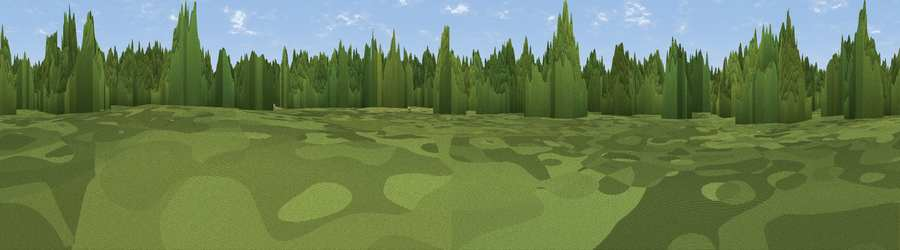

Chapel Hill
#45491 in England · top 97% of its area beats it · near Market RasenThe view, rendered

A 360° render of this exact spot computed from the terrain model, tree cover and land cover — summer colours, afternoon light, calibrated against photographs of famous viewpoints. Real trees, hedges and buildings will differ in detail.
The panorama
Grey silhouette: terrain skyline in each direction (720 bearings, Earth curvature and refraction included). Dashed green: skyline with trees (+15 m) and buildings (+8 m) as obstacles. Blue strip: how far the ground is visible on each bearing.
Where the view opens
Wedge length = distance to the farthest visible ground on that bearing (vegetation-aware). Rings at 10, 25 and 50 km.
What fills the view
70% woodland · 20% grassland · 9% cropland ·
Angular shares of the visible panorama (visual magnitude), not map area. Landscape diversity 0.36 (0–1 Shannon).
Key numbers
More beautiful places nearby
The staircase of upgrades: each row has a higher view potential than everything closer. Driving times are estimates from straight-line distance, calibrated against real road routing — check an actual route before setting out.
| Place | Direction | Drive | Score |
|---|---|---|---|
| Bloater Hill | SE · 3 km | ~7 min | 30.6 |
| Viewpoint near Walesby | NNE · 3 km | ~7 min | 57.9 |
| Viewpoint near Claxby | N · 4 km | ~10 min | 61.7 |
| Viewpoint near Claxby | N · 5 km | ~11 min | 64.9 |
| Viewpoint near Claxby | NNW · 6 km | ~13 min | 71.5 |
| Garrowby Hill (A166 crest) | NNW · 74 km | ~98 min | 71.9 |
| Viewpoint near Acklam | NNW · 78 km | ~102 min | 73.8 |
| Viewpoint near Wharncliffe Side | W · 82 km | ~106 min | 75.2 |
53.38960, -0.30319 · source: osm peak · position refined by local search. Computed location — check access rights before visiting.